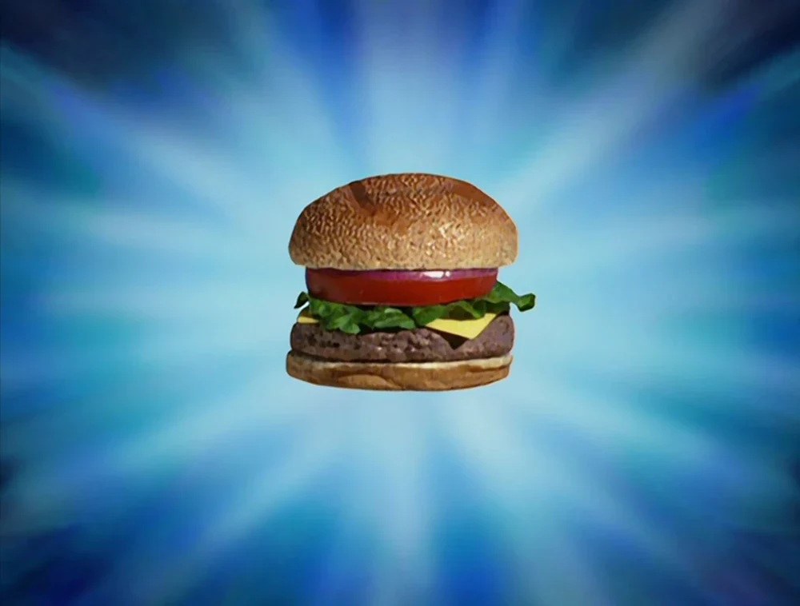

Krabby Patty Recipe

Dish Description
The legendary Krabby Patty—an irresistible masterpiece of underwater cuisine! This perfectly grilled, juicy patty rests on a soft, sesame-seed bun, layered with crisp lettuce, ripe tomatoes, crunchy pickles, and melty cheese. A secret formula of flavors brings it all together, creating the most famous and mouthwatering burger in Bikini Bottom. One bite, and you’ll see why it’s the most coveted dish under the sea!
Ingredients Required
- Sesame Buns
- Patty
- Lettuce
- Cheese
- Tomato
- Onions
- Ketchup
- Mustard
Steps to Create Krabby Patty

Step 1: Prepare the Ingredients
- Grill a juicy patty to perfection (beef, veggie, or your secret formula).
- Slice lettuce, tomatoes, pickles, and cheese for fresh toppings.
- Toast a sesame-seed bun until golden and warm.
Step 2: Assemble the Patty
- Layer in order: bottom bun → patty → cheese → lettuce → tomato → pickles → top bun
- Add your favorite sauce (or pretend it’s the secret formula).
Step 3: Serve & Enjoy
- Plate your Krabby Patty with some crispy fries or a side of fun.
- Take a bite and savor Bikini Bottom’s finest burger!🍔✨